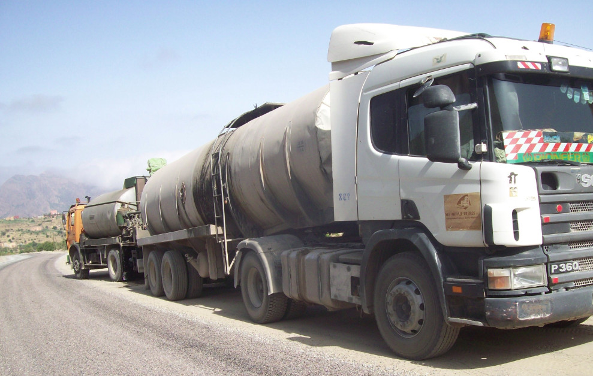

Succursale Zone Industrielle Tassila–Agadir
Proximité opérationnelle
La succursale ABHAJE Frères à Tassila–Agadir
Une présence locale qui facilite la coordination des chantiers et la disponibilité des équipes dans la région d’Agadir.

Tassila — Agadir
Succursale régionale
Un relais de proximité pour les opérations et les projets du Souss.